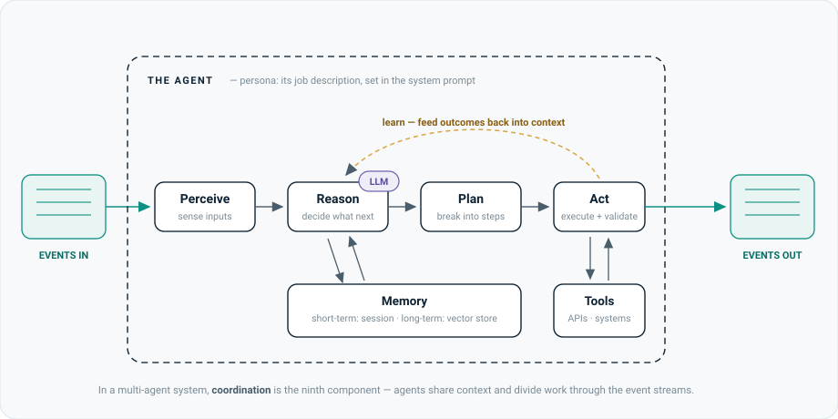
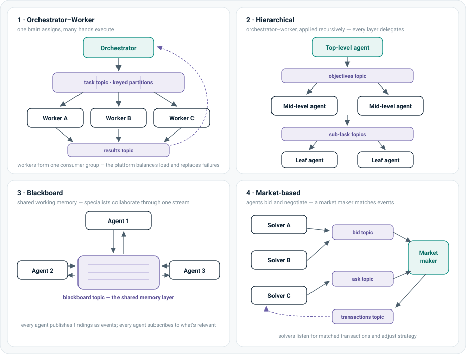

AI agents are microservices that reason. One agent is easy; a fleet of them coordinating over rigid request/response APIs collapses under its own wiring. The answer is the same shift microservices made a decade ago: communicate through event streams, not direct calls.
Agents don't fail on intelligence; they fail on infrastructure. A capable model wired to stale data over brittle point-to-point APIs makes confident decisions about a world that no longer exists.
Event-driven architecture is the fix: agents consume and emit events through streams, which buys loose coupling, replayable failure recovery, horizontal scale, and decisions made on live data. The four coordination patterns in §04 all reduce to "swap direct calls for topics".
The one-paragraph history that frames every agent conversation.
| Wave | What it is | Its limit |
|---|---|---|
| Predictive AI | Traditional ML — bespoke models for narrow tasks (churn scoring, fraud flags), trained per domain. | Every new problem starts from scratch. Rigid, slow to adopt, expensive to repurpose. |
| Generative AI | Foundation models (LLMs) — general-purpose, reusable across domains. RAG bolts on your data at prompt time. | Frozen in time and workflow-rigid: every execution path is predefined. RAG retrieves; it doesn't decide. |
| Agentic AI | Systems that act — the LLM drives the control flow, choosing steps, tools, and collaborators at runtime. | Needs infrastructure: fresh data, coordination, governance. That's what this page is about. |
Every agent framework re-implements the same nine parts. Knowing the parts lets you decompose any vendor's "agent platform" pitch into things you already understand.

| Component | What it does | Concretely |
|---|---|---|
| Persona | The agent's job description, embedded in the system prompt. Shapes every response. | "You are a lead-qualification specialist…" |
| Perception | Sensory input — how the agent learns what's happening. | APIs, user input, and (the point of this page) event streams. |
| Reasoning | Decides what to do next, powered by the LLM. | The model call at the heart of the loop. |
| Memory | Retains context across interactions — distinct from learning. | Short-term: session buffer. Long-term: a vector store for semantic recall. |
| Planning | Breaks the goal into ordered, prioritised steps. | Task decomposition before any action fires. |
| Action | Executes in the world; handlers validate the outcomes. | Send the message, update the record, place the call. |
| Learning | Improves from feedback — usually by adapting context, not retraining weights. | Feed outcomes back into the prompt assembly; cheaper than fine-tuning. |
| Coordination | How agents share work and context in a multi-agent system. | The event streams and patterns in §04. |
| Tool interface | The bridge to specialised capability. | APIs, databases, MCP servers — a plugin surface, extended without redeploying. |
This is an argument by history, and it lands well with engineers because they lived it.
Monoliths broke apart into microservices to decouple teams — then point-to-point API integration quietly rebuilt the coupling as an N×M mesh of direct calls. The industry's fix was event-driven architecture: services publish what happened to a broker (Kafka being the reference implementation) and anyone who cares subscribes. Producers don't know their consumers exist.
Agents hit the identical wall, with two aggravations: they're stateful (memory and context, not just request handling) and they're non-deterministic (they choose their own next step). Rigid synchronous wiring fails faster for agents than it did for services.
Agents work as events arrive instead of blocking on synchronous calls — no bottleneck at the slowest link in a chain.
Agents interact via streams, not direct dependencies. Adding or replacing an agent doesn't rewire the system.
Events live in an immutable log. A failed agent replays from its last offset and resumes — recovery is a property of the platform, not bespoke code.
Batch pipelines mean agents act on yesterday. Streams mean the freshest state — which for an autonomous actor is a safety property, not a nicety.
Four canonical shapes for agent coordination. The event-driven twist is the same every time: replace direct connections with topics, and inherit the platform's scaling, load-balancing, and recovery machinery for free.

A central agent decomposes work and assigns it; specialist workers execute. Distributed computing's master–worker, reborn.
Event-driven twist: the orchestrator keys tasks across partitions of one topic; workers form a consumer group. Kafka's rebalance protocol then does the load-balancing, scaling, and failure re-assignment the orchestrator would otherwise hand-roll.
Fits: decomposable work with one accountable brain — research fan-out, document pipelines, coding agents.
Agents in layers; each level oversees the one below. It's orchestrator–worker applied recursively — every non-leaf node orchestrates its own subtree.
Event-driven twist: objectives flow down through per-level topics, results flow back up through response topics. Layers can be re-staffed without touching the core logic.
Fits: big problems that decompose naturally — a programme with workstreams, an org chart of agents.
Specialists collaborate through a shared knowledge base — each posts findings, each reads what others posted. Classic in robotics and diagnosis systems.
Event-driven twist: the blackboard is a topic. Publishing a finding is an event; subscribing is how an agent watches for relevant context. The stream doubles as a shared memory layer with full history.
Fits: problems where no one owns the whole answer — incident diagnosis, multi-perspective analysis.
Agents compete or negotiate — bidding for tasks and resources. Used in trading, logistics, and distributed optimisation.
Event-driven twist: bids and asks are events on topics; a market-maker service matches them. This kills the quadratic peer-to-peer mesh — thousands of agents interact through one event log.
Fits: resource allocation under competition — pricing, capacity, scheduling.
An agentic workstream is still a delivery workstream. These are the questions that keep it governable — and what the event-driven answer looks like.
| The question you ask | Why it matters | The event-driven answer |
|---|---|---|
| How fresh is the data an agent decides on? | An autonomous actor on stale data is a liability that acts confidently. | Stream processing over batch: agents consume live state, and "shift-left" processing enriches data close to the source. |
| What happens when an agent fails mid-task? | Failures are inevitable; unrecoverable ones are a design choice. | Immutable log + offsets: replay from the last known-good point. Idempotent processing stops retries double-firing actions. |
| Where does a human get pulled in? | Guardrails are a governance artefact, not a nice-to-have. | Dead-letter queues: events an agent can't safely handle are parked for human review instead of guessed at. |
| Can we audit why an agent did what it did? | Regulated environments need decision traceability — for agents as much as people. | The event log is the audit trail: every input an agent saw and every action it emitted is recorded, in order, replayable. |
| Who is allowed to see what? | Agents touch sensitive data at machine speed; access errors scale the same way. | Stream governance: schema enforcement, lineage tracking, field-level access control, retention policies for GDPR-class rules. |
| What does validation look like before rollout? | "It demoed well" is not a production gate for a non-deterministic system. | Stage gates with evals: measured behaviour on recorded event streams before an agent earns write-access to real systems. |
The anatomy in §02 isn't theoretical — here's the same skeleton mapped onto a production voice-AI platform I founded and ran (multi-tenant AI receptionists for SMBs, orchestrating specialised agents per call).
| Component | In the voice platform |
|---|---|
| Persona | Per-tenant receptionist persona — the business's tone, services, and rules, injected as the system prompt. |
| Perception | Live telephony events: speech-to-text streams, call state, DTMF, SMS webhooks. |
| Reasoning | LLM turn-by-turn under hard latency budgets — model choice per step is a cost/latency trade-off you manage, not a default. |
| Memory | Short-term: the call transcript. Long-term: caller history and tenant knowledge base. |
| Action + tools | Booking, message-taking, transfers — via telephony and calendar APIs, each action validated before confirming to the caller. |
| Coordination | An orchestrator routes each call across specialised agents (intent, booking, fallback) — orchestrator–worker in miniature. |
| Governance | Call recording consent, per-tenant data isolation, and cost-per-call telemetry — driving a 93% unit-cost reduction ($0.18/min → $0.0126/min) without quality loss. |
The honest scale caveat: an SMB voice platform doesn't need Kafka — a call is one bounded event stream and the patterns fit in-process. The point of the mapping is that the vocabulary transfers: the same nine components and the same governance questions apply whether the fleet is three agents on a phone call or three hundred across an enterprise.
Fifteen-second definitions, in the order you're likely to need them.
| Term | What it means |
|---|---|
| Compound AI | An LLM composed with retrieval, logic, and validation layers — the system, not the model, is the product. |
| Agentic RAG | RAG where the agent decides what to retrieve and when, rather than following a fixed retrieve-then-answer path. |
| Multi-agent system (MAS) | Specialised agents collaborating (or competing) on a problem no single agent can own end-to-end. |
| Topic / partition | A named event stream; partitions split it for parallelism, with ordering preserved per key. |
| Consumer group | A set of workers sharing a topic; the platform balances partitions across them and re-assigns on failure. |
| Replay / offset | Because the log is immutable, any consumer can re-read from a saved position — the recovery and audit primitive. |
| Idempotent processing | Designing handlers so a retried event doesn't double-fire the action. |
| Dead-letter queue | Where unprocessable events go for human review instead of being dropped or guessed at. |
| Stream governance | Schema enforcement, lineage, access control, and retention applied to data in motion. |
| Shift-left (data) | Process and validate data close to its source, before it fans out — cheaper and fresher than fixing it downstream. |
| Stream processing | Transforming/joining events in motion (Flink is the reference engine) so agents receive enriched context, not raw feeds. |
| Agent frameworks | LangGraph, AutoGen, CrewAI — the orchestration layer; the streaming platform sits underneath as transport and memory. |
This page distils A Guide to Event-Driven Design for Agents and Multi-Agent Systems — Sean Falconer, Confluent, 2025 (the ebook PDF).
Related on this site: Data Fabric — the governance-first data layer these agent systems consume from; the two patterns meet exactly where agents need findable, permissioned, lineage-backed data.